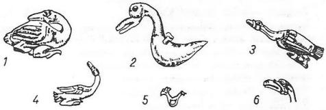

Yerin yer olduğunda, sularla kaplıydı her yer,
Ne gök vardı, ne de ay, ne güneş, ne de bir yer.
Tanrı uçar dururdu, insanoğluysa tekdi,
O da uçar, dururdu, sanki Tanrıyla eşdi.
Uçar, hep uçarlardı, yer yoktu konmazlardı
Tanrı idiler çünkü, ondan yorulmazlardı.
Yoktu Tanrının hiç bir, işiyle düşüncesi,
İnsanoğlunun ise, durmadı hiç hilesi.
Bir rüzgâr çıkarmıştı, suları kaynatarak,
Tanrıyı kızdırmıştı, yüzüne sıçratarak.
Sandı ki İnsanoğlu, bununla bütün oldum,
Ben çok güçlendim artık, Tanrıdan üstün oldum.

Şekil 48: Altay Hun çağı Tuyahta ve Başadar kurganlarında bulunmuş kutsal kaz figürleri. Kazların çoğunun yüzüne kişilik ve Tanrılık verilmiştir (Rudenko, 1960, s. 276)
Ama nasıl olduysa, sulara kaydı birden,
Gömüldükçe, gömüldü, denize daldı yerden.
Tanrıya yalvarmıştı, sularda boğulur iken,
"Kurtar beni, ey Tanrı!", diye bağırır iken.
Tanrı insafa geldi, gitmedi üzerine,
Dedi: - "Ey insanoğlu, çık suların yüzüne!"
Tanrının buyruğuyla, insanoğlu kurtuldu,
Gitti Tanrı yanına, orada uslu durdu.
Tanrı bir gün buyurdu : - "Yaratılsın, katı taş!"
Denizlerin dibinden, nasılsa çıktı bir taş.
Taş birden yüzerekten, geldi Tanrı önüne,
İnsanı da alarak, çıktı taşın üstüne.
Tanrı bir gün insana, şöyle bir buyruk verdi:
"in suların dibine, bir toprak getir," dedi.
İnsan daldı sulara, aldı bir avuç toprak,
Sulardan çıkıp verdi, Tanrısına sunarak.
"Yaratılsın yer!" Dedi, Tanrı sulara saçtı,
Yeryüzü yaratıldı, denizler karalaştı.
İnsana şöyle dedi, Tanrı ona bakarak:
"Dal suların dibine, getir yine az toprak."
İnsan dedi : - "Ben artık, bu defa da dalayım,
"Kendi payıma olsun, biraz toprak alayım."
Daldı sular dibine, bu düşünce üstüne,
İki avuç toprakla, çıktı sular yüzüne.
Birini özü için, soktu kendi ağzına,
Birini de uzatıp, sundu Gök Tanrı'sına
Kendi kendine dedi : - "Dur, bunu saklıyayım,
"Denizlere saçarak, payıma yer alayım!"
Tanrı toprağı aldı, tutup sulara saçtı,
Tanrının isteğiyle, birden yer kalınlaştı,
İnsanın ağzındaki, gizlice saklı toprak,
Büyümeğe başladı, boğazını sıkarak.
Tıkadı nefesini, boğulur gibi oldu,
Ölür gibi olurken, etrafa koşa durdu.
Oh, Tanrıdan kurtuldum, deyip düşünür iken,
Etrafına bakındı, Tanrıyı hazır buldu.
Boğulmak üzereyken, becerdi demesini:
"Ey Tanrı, gerçek Tanrı, nolursun kurtar beni!"
Tanrı kızıp söylendi: - "Ne yaptın sen, ne yaptın
"Saklayacağım diye, ağzına toprak attın,
"Niçin böyle düşünce, yer alıyor aklında,
"Toprağı nene gerek, saklarsın sen ağzında!"
İnsan, dedi : - "Ey Tanrı, düşündüm ben payıma,
"Yerim olsun diyerek, toprak aldım ağzıma."
Tanrı insanoğluna : - "Tükür’", diye bağırdı.
Tükürdü insanoğlu, tükrük yere dağıldı.
Yeryüzü dümdüz iken, kırışıp birden soldu,
Sanki bitti yerlerden, tepeler dağlar doldu.
Tanrı bu bale kızıp, İnsanoğluna döndü:
"Kötü düşüncen ile, şimdi günahkâr oldun!
"Bana kötülük için, kötü hislerle doldun!
"Saklasın hep içinde, senin halkın da sana,
"Onlar da öyle olsun, nasıl duydunsa bana!
"Benim halkımın ise, düşüncesi hep arı,
"Gözleri güneş görür, aydınlıktır ruhları.
"Gerçek Kurbustan diye, adlandırırlar beni,
"Erlik, şeytan diyerek, adlandırsınlar seni!
"Benden suç saklayanlar, senin halkın olsunlar!
"Günahkâr olanlarsa, senin malın olsunlar!
"Senin suçundan kaçan, gelsin kul olsun bana,
"Günahından gizlenen, gelip sığınsın bana!"
*
Günlerden bir gün idi, Tanrı dolanıyordu,
Baktı bir ağaç gördü, göğe tırmanıyordu.
Garip bir ağaç idi, dalsız budaksız idi,
Tanrı bunu görünce kendine şöyle dedi:
"Çıplak kalmış bir ağaç, böyle dalsız budaksız,
"Zevk vermiyor gözlere, görünüşü pek tatsız!"
Tanrı yine buyurdu : - "Bitsin, dokuz dalı da!"
Dallar çıktı hemence, dokuzlu budağı da.
Kimse bilmez Tanrının, düşüncesi ne idi,
Soylar türesin diye, şöylece emir verdi:
"Dokuz kişi kılınsın, dokuz dalın kökünden,
"Dokuz oymak türesin, dokuz kişi özünden!"
Bir gün Erlik Tanrının yanına konmuş idi,
Tanrının karşısında, çöküp oturmuş idi.
Bir çok gürültü geldi, Tanrının sarayından,
Bu ne diyerek Erlik, ölmüştü merakından.
Bunu duyunca Erlik, kemen sordu Tanrıya:
"Nedir bu gürültüler, geliyor dışarıya?"
Tanrı dedi : - "Ne olsun, sen de Hansın, ben de Han,
"Onlar benim ulusum, benim emrime bakan.
" Şeytan bunu duyunca, birdenbire sevindi:
"Bu ulusu bana ver, ne olur, Tanrı!" Dedi.
Şeytanın bu sözünden, Tanrı sezmişti işi,
"Hayır, veremem sana," deyip, bitirdi işi.
Şeytan bunu duyunca, dalmış bir düşünceye,
Kendince pilân yapıp, başlamış hep hileye:
"Ne eder, eder elbet, ben bir yol düşünürüm,
"Tanrının ulusunu, ben yerinde görürüm!"
Varmış yola koyulmuş, uzun uzun yürümüş,
Yetmiş bir günde bulmuş, ama çok şeyler görmüş.
Bakmış Tanrının halkı, kimi insanlar gibi,
Kimi yaban hayvanı, kimi de kuşlar gibi
Şeytan sormuş kendine: "Tanrı bütün bunları,
"Ne yaptı, nasıl aldı, almalıyım şunları;
"Bu da benim isteğim, ne edip almalıyım,
"Bütün bu ulusları, ulusum yapmalıyım."
Böyle söyleşen Şeytan, kendi kendine sorar:
"Ne yeyip ne içerler, ne ile bunlar yaşar?"
Bakmış ki, halk toplanmış, bir ağacın yanında,
Meyva yeyip dururlar, ağacın tek dalında.
Yemiyormuş, hiç kimse karşıki dallarından,
Meyvayla dolu iken, geçmezmiş yanlarından.
Şeytan bunu görünce, şaşırmış doğrusu bu,
Demiş bari sorayım, nedendir acaba şu:
"Şimdi gördüm buradan sizlere bir bakınca,
"Niçin sizler yersiniz, şu dallardan yalnızca?"
Tanrının ulusundan, biri de şöyle demiş:
"Bu dallardan yiyoruz, Tanrı bu emri verdi,
"Biz onun kullarıyız, Tanrımız böyle dedi.
"Tanrı bize dedi ki, görün şu dört budağı,
"Yemeyin hiç birinden, değdirmeyin dudağı.
"Dedi, gün doğusunda, beş dal uzanıyor ya,
"Sizin aşınız olsun, uzanın bu meyvaya.
"Bunu diyen Tanrımız, çıkıp göklere gitti.
"Bu ağacın dibine bir iti bekçi dikti.
"Giderken ite dedi: " - Sakın uyuyup kalma,
"Eğer Şeytan gelirse, sakın onu bırakma!"
"Bekçi itin yanına, bir de yılan vermişti
"Yılana da ayrıca şöyle tembih etmişti:
" - 'Eğer Şeytan gelirse, sok hemen sen Şeytanı!"
"Ayrıca tembihledi, hem iti hem yılanı;
"Dedi: - "Gün doğusunda, uzanan şu beş daldan,
"Kim ona yanaşır da, alırsa meyvalardan,
"Uzak tutun onları, dala yanaştırmayın!
"Bu dallardan birine, hiç el uzattırmayın!"
"İşte ne yapalım biz, bu beş daldan yiyoruz.
"Tanrının emri böyle, buyruğa uyuyoruz!"
Şeytan bunu duyunca, ağaca doğru vardı,
Törüngei adlı biri, halk içinde yaşardı.
Şeytan ona yaklaştı, kurnazca şöyle dedi:
"Tanrı size demiş ki, beş dala uzanmayın!
"Sizin aklınız yok mu? Yalana inanmayın!
"Bu beş dallık meyvayı, yasak etmişmiş size,
"Bu nasıl bir söz imiş, inanmayın bu söze!
"Bu büyük bir yalandır, gerçekle ilgisi ne?
"Dört daldan yenmez diye, kim demiş kendisine?"
Şeytan bunu söylerken, yılan uyuyor imiş,
Dışarda olanları, sezip duymuyor imiş.
Şeytan girmiş yavaşça, ta yılanın içine,
Akıl vermiş yılana, ne uygunsa işine.
Demiş : - "Yılan uyuma! Tırman da çık ağaca:"
Yılan başlamış birden, tırmanmış sık ağaca.
Bu yasak meyvalardan, ilk defa yılan tatmış,
Şeytanın arzusuyla, kendini kötü yapmış.
Hani Törüngei adlı, bir er kişi vardı ya,
Vurulmuştu gönülden, Eci adlı bir kıza.
Yasak meyva yer iken, bağırmış şöyle yılan:
"Eci ile Törüngei, siz de yeyin bunlardan!"
Törüngei akıllıydı, dedi: - "Yemem onları!"
"Biz nasıl yeriz onu, yemek yasak bunları;
"Tanrı bize buyurdu, yemeyin ondan diye,
"Ben ağzıma vuramam, sen bana versen bile!"
Yılan bunu duyunca, olmayacak bu baktı,
Bir parça meyva alıp, Eci kıza uzattı.
Eci meyvadan alıp, yardı, ikiye böldü,
Meyvanın sularını, yavuklusuna sürdü.
Tam bu çağlarda iken, insanlar tüylü imiş,
Bu meyvayı tadınca, tüyler dökülüvermiş.
Kalmışlar her ikisi de, tüysüz, donsuz, ap ayaz,
Utanmış, aramışlar, saklanacak yer biraz.
Hemen kaçmış birisi, bir ağacın ardına,
Öbürününse koşmuş, bir gölge yardımına.
Tanrı çıkagelmiş, bakmış herkes dağılmış,
"Törüngei! Törüngei! Eci!" Diye çağırmış.
"Nerdesiniz ?" Diye de, Tanrı aramış yine,
İnsanlar cevap vermiş, bu soru üzerine:
"Biz ağaçlardayız ama, gelemeyiz size biz!"
Tanrı demiş : - "Törüngei, ne yaptınız böyle siz!"
Erkek demiş : - "Ey Tanrı, benim yavuklum kandı,
"Yasak olan meyvayı, dudaklarıma bandı!"
Tanrı dönmüş kadına, şöyle demiş Eci'ye :
"Ben neler duyuyorum, nedir yaptığın böyle!"
Kız da demiş: - "Ey Tanrım, ben bakmadım meyveye,
"Yılan söyledi bana, bu meyvayı ye diye!"
Tanrı yılana demiş : - "Uymadın sen sözüme!"
Yılan boynunu bükmüş : - "Şeytan girdi özüme,
"Bilmedim nasıl oldu, gittim Şeytan izine!"
Tanrı da şaşmış kalmış, Şeytanın hilesine.
Tanrı demiş : - "Ey yılan, Şeytan senin içine,
"Nasıl oldu da girdi, uydun Şeytan işine!"
Yılan demiş : - "Ey Tanrı, düşmedim ben peşine;
"Sende idi kulağım, hazırdım her sesine;
Ben burada uyurken, Şeytan bana sokulmuş,
"İçime girerekten beni bu hale koymuş!"
Tanrı dönmüş köpeğe - "Ey köpek, sen ne yaptın?
"Şeytanı tutmadın mı, neden uyuyup yattın?
Köpek demiş : - "Vallahi, Şeytan nedense benim,
"Gözüme görünmedi, nasıl onu göreyim?"
Bunları duyan Tanrı, yılana demiş bir yol:
"Ey yılan, bundan sonra Şeytan'ın kendisi ol!
"İnsan düşmanın olsun, öldürsün canın alsın,
"Kötülük timsali ol, adın da öyle kalsın!"
En çok kadına kızan, Tanrı şöyle söylemiş:
"Vefasızlık örneği, ey Eci adlı kadın!
"Şeytan sözüne kandın, onun aşına bandın!
"Benim yeme dediğim, meyvayı alıp yedin!
"Üstelik eşine de, al da bunu ye dedin!
"Bundan sonra çocuğu, hep kadınlar doğacak,
"Doğum ağrılarıyla, ızdıraplar boğacak!"
Tanrı erkeğe dönüp, ona da şöyle demiş:
"Sen de kadına uydun, tuttun Şeytan sözünü,
"Şeytan aşını yeyip, kaybettin sen özünü!
"Benimkini tutmadın, Şeytan sözünü tuttun,
"Yerini bende değil, Şeytan yanında buldun!
"Bana kulluk etmeyen, ışığımla dolamaz
"Benim sözümden çıkan, rahmetimi bulamaz!
"Senin yerin ben değil, karanlık yerler olsun,
"Kalbin aydınlık değil, karanlıklarla dolsun!
"Bilirsiniz pekâla, Şeytan benim düşmanım,
"Şeytanla dostluk ettin, utan, oldun düşmanım!
"Nedir senin yaptığın, reva gördüğün bana!
"Senin bu yaptığını, düşmanlar yapmaz sana!
"Eğer yemeseydin sen, Şeytanın bu aşını,
"Benim sözümü tutup, çevirseydin başını,
"Olurdun, eş, arkadaş, Tanrı yanında er geç,
"Şimdi artık kendine, kendi öz yolunu seç.
"Sizler çocuk doğurun, türetin soyunuzu,
"Dokuz kız, dokuz oğlan, türetsin boyunuzu.
"Ben payıma yaratmam, faydasız, İnsanoğlu!
"Şeytanın arkadaşı, vefasız İnsanoğlu!
"Şeytanın meyvasına, kanan sen, İnsanoğlu!
"Şeytanın duasını, alan sen, İnsanoğlu!
Tanrı döndü Şeytana, kızarak şöyle dedi:
"Sen nasıl aldatırsın insanı böyle," dedi.
Şeytan Tanrıya bakıp, küstahça cevap verdi:
"Ulusundan ver diye, rica ettim ben sana,
"Bu ricamı tutmadın, sen vermem dedin bana!
"Ben de hırsızlık ettim, kandırıp yine çaldım,
"Atla kaçanı bile, düşürüp yine aldım!
"Kalbine fesat soktum, rakı, içki içenin,
"Dayakla canın aldım, insanla döğüşenin!
"Suya girenlerin de, aklını alacağım,
"Su dibine daldırıp, canını alacağım!
"Ağaca çıkanların, kayaya çıkanların,
"Ayağını kaydırıp, ölüme atacağım!"
Şeytanın bu sözüne, Tanrı da şöyle dedi:
"Bir kat var sana göre, üç kat yerin dibinde,
"Ne ay var, ne de güneş, karanlıklar içinde.
"Seni gökten aşağı, sürüp indireceğim!
"Seni yerin altında, tutup sindireceğim!"
Bundan sonra da Tanrı, insana şöyle dedi:
"Bekleme benden yemek, benden artık yardım yok!
"Kendiniz çalışınız, aşınızı yapın çok!
"Bundan sonra ben size, görünmem artık bitti!
"Benim elçim Mai-Tere, sizinle yere gitti!
"0 artık ne gerekse, sizlere öğretecek!
"Bana elçim olarak, haberi iletecek!"
*
Gönderdi Mai-Tere'yi, Tanrı gitti katına,
Öğretti ne gerekse, insanın hayatına.
Arpalı kara ekmek, şalgam aşıyla doyduk,
Tanrı aşı yerine, türlü soğanı koyduk.
Günün birinde Şeytan, Mai-Tere'ye giderek:
"Ne olur ey Mai-Tere, Ne olur benim için,
"Tanrıya yalvarı ver, varı ver benim için!
"Kurtulur da çıkarım, belki Tanrı katına,
"Belki de kavuşurum, göklerin hayatına!"
Mai-Tere kabul etti, Tanrı katına vardı,
Altmış iki yıl derler, Tanrısına yalvardı.
Tanrı gelip insafa, Şeytana şöyle dedi:
"Ey Şeytan bana eğer, düşmanlık yapmaz isen.
"İnsanlara hoş bakıp, kötülük saçmaz isen,
"Affettim haydi seni, katımda otur," dedi.
Tanrının affı ile, Şeytan göklere gitti.
Tanrıya vardı bir gün, şöylece rica etti:
"Ne olursun ey Tanrı, ben de gökler yapayım,
"Kut ver bana nolursun, payıma gök alayım!
Bu rica üzerine, kut verdi Tanrı ona,
Dedi : - "Sen de gökler yap, al kendi hesabına."
Şeytan kutu alınca, kendine gökler yaptı,
Gökler Şeytanla doldu, cinlere köşkler yaptı.
Ayrıca göklerde de, kutsal kişiler vardı,
Tanrıya yardım eder, semâda dururlardı.
Mandı-Şire'ydi biri, düşünüp durdu birden,
Şeytanları görünce, kalbi buruldu birden:
"Bu ne kötü düzendir, Şeytanlar hep azarlar!
"Tanrının insanları, yeryüzünde yaşarlar!
"Şeytanın adamları, gökyüzünü basarlar!
Tanrıya doğrusu bu, Mandı-Şire darıldı,
Düşman oldu Şeytana, harbe hazırlanıldı.
Şeytan da karşı geldi, vuruştular bir zaman,
Mandı-Şire'yi yaktı, ateş püskürdü Şeytan.
Mandı-Şire kaçarak, yüzün Tanrıya sürdü,
Onun haline bakan, Tanrı sorarak güldü:
Dedi : - "Ey Mandı-Şire, bu gelişin nereden?"
Mandı-Şire dert yandı, sordu : - "Bu düzen neden?
"Ey Tanrım şöyle bakın, bu ne kötü düzendir?
"Anlatayım size bir, beni en çok üzendir.
"Şeytanın adamları, gökte hayat sürerler,
"Tanrının insanları, kara yerde tünerler!
"Ben atıldım Şeytanı, gökyüzünden koğmağa,
"Anladım ki bende güç, yok onları boğmağa!
Mandı-Şire'yi duyan, Tanrı doğrulup dedi:
"Korkma ey Mandı-Şire, benden kuvvetlisi yok,
"Şeytanın gücü şimdi, elbet senden daha çok!
"Her şeyin zamanı var, bu çağ bir gün gelecek,
"Bugün git- Mandı-Şire!' Diye Tanrı diyecek!"
Bekledi Mandı-Şire, yata yata yıl geçti,
Bir gün uykuda iken, güzel bir rüya seçti.
Düşündü Mandı-Şire, o gün mü geldi diye,
Şeytanla vuruşacak, hoş gün mü geldi diye.
Demişti hani Tanrı, elbet bir gün gelecek,
'Mandı-Şire git hemen!' Diye Tanrı diyecek!
Beklediğim o günler, artık gelmiş olmalı,
Aradan yıllar geçti, zaman dolmuş olmalı.
Gerçekten Tanrı onu, görerek şöyle dedi:
"Ey Mandı-Şire artık, sen bugün varacaksın!
"Göklerden onu koğup, yerlere atacaksın!
"Muradına kavuşup, onları koğacaksın!
"Ondan kuvvetli olup, çok güçlü olacaksın!
"Kutladım kutla seni, güçlüdür benim kutum,
"Her işte sana yetsin, sendedir hep umudum!"
Duyunca Mandı-Şire, güle güle katıldı,
Bu ne biçim güç diye, sormak için atıldı:
"Ne okum, ne okluğum, ne tüfeğim var benim!
"Ne kargım, ne mızrağım, ne kılıcım var benim!
"Yalnız var yalın kolum, biliyorsun ey Tanrım!
"Bir kolun kuvvetiyle, ben ona ne yaparım?"
Tanrı dedi : - "Ne ile, gitmek istersin ona?"
Mandı-Şire söz aldı, dedi ki Tanrısına:
"Benim hiç bir şeyim yok, göreceğim ben onu,
"Kendi öz ayağımla, tepeceğim ben onu.
"Kendi kollarım ile, ben onu tutacağım,
"Havaya kaldırarak, onu fırlatacağım!"
Tanrı dedi: - "Al şunu, al bu mızrağımı al!
"Şeytanı görünce de, mızrağımı ona sal!"
Mandı-Şire alınca, bu mızrağı eline,
Göklere çıkıp daldı, gitti Şeytan iline.
Erlik'i buldu yendi, Şeytanı yakaladı,
Gökte neyi var ise, hepsini parçaladı.
Şeytanın her şeyini, göklerden yere attı,
Şeytan bunu görünce, kendi de gökten kaçtı.
Bundan önce dünyada, ne kaya, ne taş vardı,
Ne şimdiki gibi de, yükselen bir dağ vardı.
Şeytanın göklerinden, düşen parçalar ile,
Dünya karışmış oldu, kayalar taşlar ile,
Dünyanın her tarafı, dağla tepeyle doldu,
Dağların her yanı da, yamaçlı sarp, dik oldu.
Dümdüz iken dünyamız, dünyaya olan oldu,
Tanrının yarattığı hep böyle yaman oldu.
Şeytana tâbi olan, kim varsa attı gökten,
Kimi suda boğuldu, tümü gökten düşerken.
Kimi düştü sığıra, boynuzlarında öldü,
Kimi düştü ağaca, budaklarında öldü.
Kimi de taşa çarptı, insanlara kimisi,
Elhasılı öldüler, ne var ne yoksa hepsi.
*
Şeytan Tanrıya vardı, gökte bir yer diledi:
"Benim gökte nem varsa, yıkıldı gitti," dedi.
"Ne olursun, ey Tanrı, küçük bir yer ver bana!"
Tanrı Şeytana dedi: - "Yok veremem ben sana!"
Şeytan dedi: - "Ey Tanrı, küçücük bir yer olsun,
"Tarla yapayım ondan, benim de tarlam olsun."
Tanrı, dedi : - "Olamaz!" Erlik: - "Bir yer ver bana,
Yalnız beş kulaç olsun!" Tanrı vermedi ona.
Şeytan baktı olmuyor, gitti bir sopa buldu,
Sopayı yere sokup, sonra Tanrıya sordu:
"Tanrı bana bu kadar, yer ver başka istemem,
"Sopanın ucu kadar, olsun fazla istemem!"
Tanrı gülerek dedi : - "Haydi bu yeri alın,
"Daha fazla değil ha! Ucu kadar sopanın."
Şeytan yine başladı, kurmağa yuvasını,
Yaymağa başlamıştı, kötülük havasını.
Şeytanın niyetini, Tanrı görüp anladı,
Tanrı kızıp bağırdı, sesi gökte çınladı:
"İn yerin ta dibine, in artık in, burdan in!
"Neyin var neyin yoksa al tümünü, burdan in!
"Kur yerin en dibinde, ne istersen kendine!
"Topla damın, deveni, in yerin en dibine!
"Kendine ne istersen, ordunu, askerini!
"Kur yerin en dibinde, sarayını, kaleni!
"Sönmez ateş alevi, göklerde hiç sönmesin!
"Ne güneş ve ne de ay, gözüne görünmesin!
"Yerin en diplerine, seni kapatacağım,
"Bil seni kıyamette, ancak çağıracağım.
"Yaşarsın ışığımla, iyilikte yürürsen,
"Kat kat indireceğim, kötülükte yürürsen!
"Bil bunu! Sonun böyle!"
Şeytan dedi : - "Ey Tanrı, düşündüm ki alayım,
"Ölüleri yanıma, yer altına varayım."
Tanrı dedi : - "Olamaz! Ölüleri veremem!
"Şeytan eline verip, kötülükler edemem!"
Şeytan dedi : - "Ey Tanrı, ne aile ne halkım,
"Var yerin, diplerinde; ben nasıl yaşayayım?"
Tanrı dedi : - "Ey Şeytan ne sorarsın bunu sen?
"Kut bile verdim sana, insan yarat istersen!"
*
Kutu alınca Şeytan, çekildi dünyasına,
Şeytan yaptı bir körük, bir kerpeten yanına.
Eline çekiç alıp, vurdu örse bir defa,
Tam çekicin altından, fırladı bir kurbağa
Bir vurdu yılan çıktı, kıvrılarak kayboldu.
Bir vurdu ayı çıktı, kaçıp toz duman oldu.
Bir vurdu domuz çıktı, domuzun en vahşisi,
Bir vurdu Albıs çıktı, kötü ruhun saçlısı.
Bir vurdu Şulmus çıktı, kötülükleri saçtı,
Bir vurdu deve çıktı, Tanrının sabrı taştı.
Tanrı kızarak geldi, topladı neyi varsa,
Kerpeten, çekiç, körük, gibi ne şeyi varsa.
Hepsi birden toplanıp, ateşe atılmıştı.
Körüğün alevinden, bir kadın fırlamıştı.
Kerpetenle çekiçten, er kişi türemişti.
Tanrı kızıp kadının, yüzüne tükürmüştü.
Kadın kuş oldu uçtu, Kordoy derler bu kuşa,
Kokutur bataklığı, köpek havlar bu kuşa.
Erkek de bir kuş oldu, adına derler Yalban,
Bacakları çok uzun, şekli ise çok yaman.
Bu çok garip bir kuştur, nedense yok elleri.
Arar bulur nerdeyse, atılmış çizmeleri.
Bayıldığı tek şeyi, topuğu kemirmektir,
Evdeki pisliklerse, ona güzel yemektir.
*
Tanrı halkına dönüp, nasihat verdi şöyle:
"Davar yaratıverdim, aş olsun diye size!
"Dünyada akıp giden, suları yine size,
"Arı ve duru yaptım, içiniz diye size!
"Yardım edin, diyorum! Size yardım ederken,
"Gidiyorum şimdi ben, dönmem artık pek erken!"
Sonra yardımcı olan, ruhlarına da döndü:
"Bu senin görevindir, Ey Şal-Yime dinle sen!
"Rakı içip de sarhoş, olanları koru sen!
"Küçücük çocukları, kuzuları koru sen!
"Küçük buzağıları, toy tayları koru sen!
"Sen koru insanları, iyi ölümle ölen,
"Kabul etmem kim varsa, kendisini öldüren!
"Tanrıya hizmet için, Hakan'a hizmet için!
"Harpte savaşıp ölen, hizmette ölmek için!
"İnsanları sen topla, bana getirmek için!
"Şeytanı senden uzak, ırak yerlere sürdüm,
"İnsanoğlu bunu bil! Mutluluk olsun diye!
"Şeytan gelirse sana, yemek istemek için,
"Korkma, ver kendi aşın, iyilik olsun diye!
"Eğer gelirse Şeytan, sana aş vermek için,
"Bil yapıyor bu işi, kötülük olsun diye!
"Şeytan aş veriyorsa, düşün bu veriş niçin?
"Arzuluyor, bil seni, ulusum olsun diye!
"Unutma bu sözümü, adımı her an için,
"Büyük Tanrı başında, Hakanın olsun diye!
"Adımı andıkça sen, ulusum olacaksın,
"Bana tâbi kaldıkça, kut bulup dolacaksın!
"Çok uzak ülkelere, ben şimdi gideceğim,
"Unutma çok geçmeden, ben yine döneceğim!
"Tanrı hiç gelmez diye, aklını bozmayasın!
"De, 'Tanrı gelecektir', bunu unutmayasın!
"Görür benim gözlerim, bütün iyilikleri!
"Gözümden de hiç kaçmaz, silin kötülükleri!
"Dünya ulusu için, tayin ettim yerime,
"Size baksın, Yapkara, Mandı-Şire, Şal-Yime.
"İnsanlara iyi bak, ey Yapkara, Yapkara!
"Şeytan bir gün gelirse, bil ki ruhu kapkara!
"Ölen insanlarımın, ruhunu çalacaktır,
"Kendi ulusu için, yurdunu alacaktır!
"Varma sakın üstüne, Mandı-Şire'ye söyle,
"Mandı-Şire kutludur, onu, o yener böyle!
"Dedi : - "Ey Hodo Sungkü, bekle ayla güneşi!
"Mandı-Şire sen de bak, sakla ayla güneşi!
"Fenaları iyiden, sen uzak tut Mai-Tere!
"Düşmanları kamimden, sen de ey Mandı-Şire!
"Benim adımı hep an, tenine güç geldikçe,
"Başkasına yaptırma, kötü şeyi bildikçe!
"Ölenlerin mirası, herkese eşit olsun,
"Fayda bulsun öksüzler, herkesle eşlik bulsun!
"Adı çıkmışsa eğer, bir Hakan iyi diye,
"Sen sanma, inanma hiç, halkı da iyi diye!
"Öğret insanlara sen, ker dem iyi olmağı,
"Öğret oltayla balık, ağla balık tutmağı.
"Hayvan beslemenin de, öğret yolu ne ise,
"Öğret sincap tutmağı, yapsınlar bir elbise.
"Sevket insanları hep, yollara senden iyi!
"Ben varmışım gibi, eğit hep, hem benden iyi!"
*
Tanrı bunları demiş, ordan uzaklaşmıştı,
Mandı-Şire dünyada, yapayalnız kalmıştı.
Bir çengel bulup hemen, oltaya çengel taktı,
Kendini eğirerek, bir ağı kendi yaptı.
Bir de kayık yaparak, onlarla balık tuttu,
Balığı çok olmuştu, artık kendi mes'uttu.
Barutu icat edip, tüfekle atıverdi,
Tüfeğini kullanıp, sincap avlayıverdi.
Her şeyi iyi gitti, Tanrının sözü ile,
Her iş yolunda gitti, Tanrı öğüdü ile!
Her şeyi yapabildi, her şeyi bulabildi,
Aç kalmadı Tanrıdan, her şeyi alabildi.
Mandı-Şire dedi ki, yine günlerden bir gün:
"Bir rüzgâr beni alıp, uçuracaktır bu gün!"
Gerçekten bir rüzgâr geldi, Mandı-Şire'yi aldı,
Girdapları içinde, uçurup göğe saldı.
Bunu gören Yapkara : - "Mandı-Şire'yi," dedi,
"Tanrı kendi payına, alarak bizden gitti!
"Onu aramam artık, çünkü göremem artık,
"Tanrının tek elçisi, şimdilik benim artık.
"Sanki yeniden doğdum, geriye yeni döndüm,
"Tanrının elçisiyim, dünyaya yeni döndüm.
"Sakın yoldan çıkmayın, Tanrıdan öğrenilen;
"Kuvvetin aslı budur, Tanrıdan bize gelen!"
Diye öğütler verdi, sonra da çıkıp gitti.